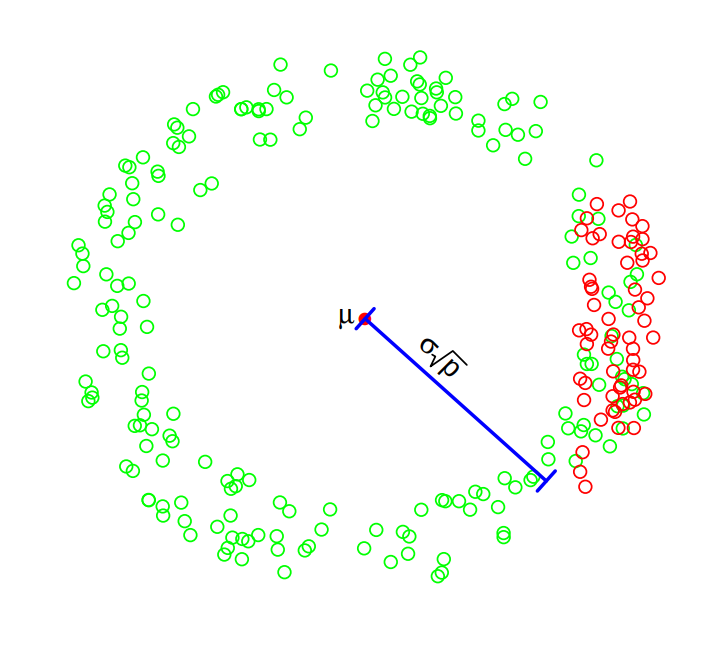

New research area : Deep reinforecment learnig
General research areas : Statistics, geometry and algorithms for high-dimensional data
Amir-Hossein Bateni. Contributions to robust estimation: minimax optimality vs. computational tractability. PhD thesis, ENSAE, IP Paris. link
Amir-Hossein Bateni, Arshak Minasyan, Arnak S. Dalalyan, Nearly minimax robust esti- mator of the mean vector by iterative spectral dimension reduction, arXiv:2204.02323. link
Amir-Hossein Bateni, Arnak S. Dalalyan. Confidence regions and minimax rates in outlier- robust estimation on the probability simplex. Electronic Journal of Statistics, Volume 14, Number 2, 2020, Pages 2653-2677. link
Amir-Hossein Bateni, Thibaut Manneville and Vincent Pilaud. On quadrangulations and Stokes complexes. Electronic Notes in Discrete Mathematics, Volume 61, August 2017, Pages 107-113. link
